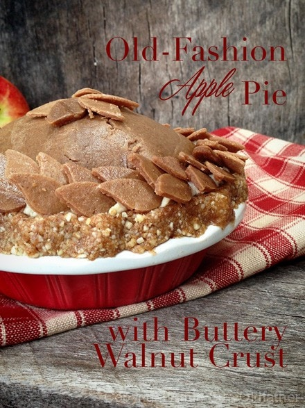
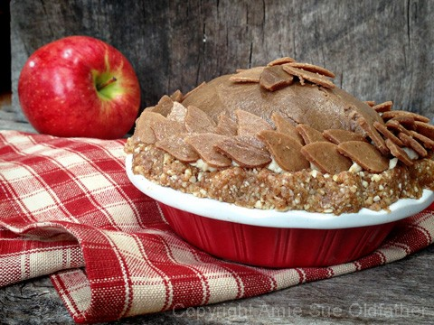
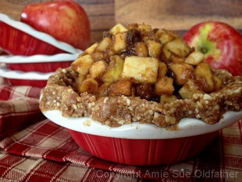
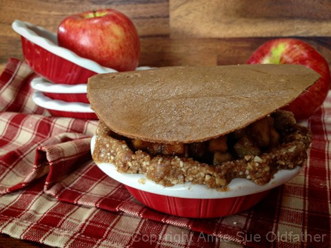
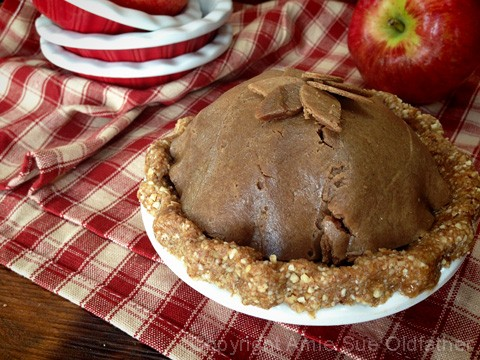
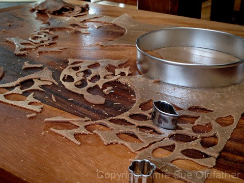

Old-Fashioned Apple Pie with Buttery Walnut Crust

I am always taken back by towering pies that are covered in a thin crust. I love piercing the tip of the fork down through the crust. I really can’t explain why we all have the silly traditions that we do with food.
As a child, I use to dip my fork between the bottom and top crust, aiming purely for the filling. The crust was not my thing back then. But, perhaps I would have enjoyed them more if they were like the raw crusts that I make these days.
At your first scan through this recipe, it may seem overwhelming, like there are a lot of steps to do. Each one is really easy, I promise you that. If you skip making the thin top crust, this pie could be made within 30 minutes and you’ll find yourself enjoying it in 31 1/2 minutes (I am giving you time to grab a fork and plate).
The top crust is very easy to make, it just takes dry time in the dehydrator. So if you don’t have a dehydrator or the time, skip the top crust. You could make up some extra bottom pie crust and loosely crumble it over the pie instead. I refer to the crust as “buttery”… there isn’t any butter in it but the walnuts have a buttery taste.
I served up the first slice and delivered it to Bob down in his office. Three times, in between bites, he looked up and me and said that it tasted just like a real apple pie. Silly man, it is a REAL apple pie. ;)

The key ingredient in this pie is the apple. Raw apple… and the raw apple you use for this pie can make or break it. So I recommend that you taste test the apples that you are going to use. Some apples are sweeter than others and that might affect the amount of sweetener you want to use in this recipe.
Don’t use bruised, mushy or mealy apples. They are devoid of taste and have fewer nutrients. If you are curious to know what all the different apples taste like and when they are in season, I found this great site called Apple Works. They have everything laid out for you.
In the directions below, I said to place the pie filling in the dehydrator for 1 hour at 145 degrees. If you are new to the technique and understanding of using this high of a temperature, please read this post. The reason I did this step was to soften the apples for a cooked texture. You can skip this step if you want and it will still taste amazing. If you skip the dehydrating step, I do recommend that after you make the filling, that you let it sit in the fridge for several hours so that all the ingredients have a chance to really meld together. It will enhance the experience. :)
Ingredients:
Yields 2 mini pie ramekins (approx. 5″ each)
Bottom pie crust:
Butter top crust and leaves: makes 1 (16×16″) tray
- 1 cup raw walnuts, soaked
- 1/2 cup raw cashews, soaked
- 1/2 cup water
- 2 Tbsp fresh lemon juice
- 2 Tbsp raw honey
- 1 Tbsp vanilla extract
- 1/2 tsp ground cinnamon
- 1/4 tsp Himalayan pink salt
Filling:
- 1 cup Medjool dates, pitted
- 1/2 cup water
- 2 Tbsp maple syrup
- 1 Tbsp fresh lemon juice
- 1/2 tsp Allspice
- 2 large organic apples
- 1/2 cup raisins
Preparation:
Bottom pie crust:
- Place the walnuts, cashews, cinnamon, and salt in the food processor, fitted with the “S” blade. Process until the nuts are broken down into small pieces.
- Add honey and vanilla. Pulse together to mix.
- Don’t over-process. This will cause the walnuts to release too much of their natural oils and make your crust oily.
- To make this pie vegan, replace the honey with another liquid sweetener.
- Press the crust into the ramekins. The mini pie pans that I used were 4″ across inside the pan and 5 1/2″ from outside edge to outside edge. If you pans are larger, you may need to make another batch of crust mix. The crust should come up the sides and be thick enough to pinch into a fluted edge.
- Place in the fridge while you make the other components.
Butter top crust:
- After soaking the walnuts and cashews, drain and rinse them. Add to a high-powered blender.
- In a high-speed blender (Vitamix or Blendtec) combine the walnuts, cashews, water, lemon juice, honey, vanilla, cinnamon, and salt. Blend until the sauce is smooth and creamy.
- Test for grittiness by rubbing a bit between your thumb and finger.
- If you feel any grit, keep blending.
- Depending on your machine, this can take 1-5 minutes.
- Pour the batter on the teflex sheet that comes with the dehydrator. I use the Excalibur dehydrator which has a 14 x 14″ tray.
- I used one tray, spreading the batter to all edges. Make sure that you don’t spread the batter thinner around the edges. This will prevent the edges from getting brittle from drying quicker than the center.
- Dehydrate at 145 degrees (F) for 1 hour, then reduce to 115 degrees (F) and dehydrate for an additional 10-15 hours.
- Check the dough every few hours to make sure that you don’t over-dry it.
- The texture should be pliable like fruit leather.
Filling:
- If the Medjool dates are hard, you can rehydrate them in enough warm water to cover them for about 15 minutes.
- After soaking, drain and squeeze the excess water out of them.
- If the dates are moist, this step can be skipped.
- Place the dates, water, lemon juice, maple syrup, and Allspice in the food process, fitted with the “S” blade. Process until it turns into a fluffy paste. The dates will turn color from a deep brown and a tan color.
- Ingredients to make Allspice: 1/2 tsp ground cinnamon, 1/4 tsp ground cloves, 1/4 tsp ground nutmeg. Place in a small jar and shake to your favorite song!
- Peel and core the apples. Dice into small chunks and place in a medium-sized bowl.
- Add the date sauce to the apples, add the raisins and toss gently.
- Make sure all the apple pieces are coated but be careful that you don’t stir too hard and mush up the apples.
- If the sauce seems too dry, you can a little more maple syrup. You don’t want the sauce soupy or it will make the bottom crust soggy.
- Pour the apples into a plate or shallow bowl and place it in the dehydrator for 1 hour set at 145 degrees. This will soften the apples for that cooked texture.
Assembly:
- Divide the filling into two portions. Fill the cavity of the crusts that you have prepared. Don’t pack the filling in, let it pile up high and loosely.
- Take the top crust sheet and cut out a circle that is about 1-2″ wider than the rim of the pan.
- Lay a circle of crust on the top of the apple pie, cup your hands over the crust, and very gently mold it to the dome of the apple pie filling.
- If the top crust got to dry and isn’t very pliable, you can spritz the back of it with water to soften it.
- Gently have the top crust tuck down inside the pie.
- Small cracks are just fine, they will give that cooked appearance.
- Decorate the top as desired. I cut out small leaves to put on the very top, center of the pie, and for around the rim. To help hold the leaves on the rim, I piped some White Cake Frosting around the edge. You could use date paste in the same manner if you wanted. I then overlapped the leaves on top of each other as I went around the rim of the pie.
- This pie should keep for 3-5 days in the fridge. Be sure to cover it well to protect it from fridge odors.




© AmieSue.com